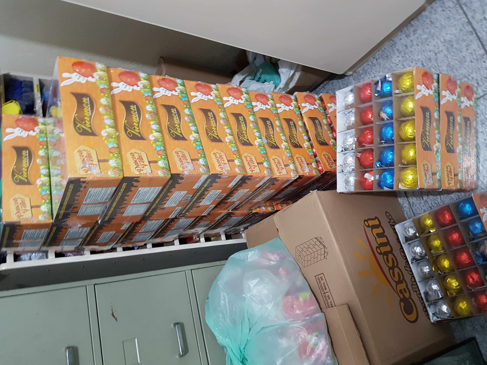
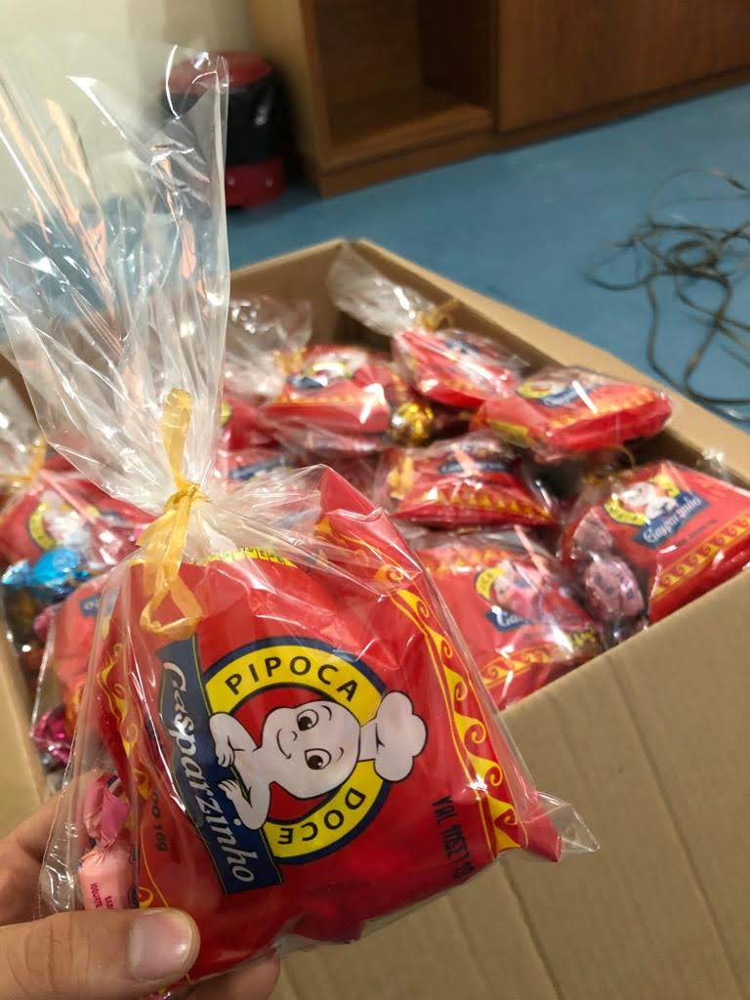

Aluno: Victor Wichmann Raposo
Supervisora: Karina Menezes
A instituição:
A CEI Centro de Convivência de Itatinga, localizada no Jardim Santa Terezinha em São Paulo, é uma instituição que visa atender a comunidade local em suas necessidades, melhorando as condições de vidas dos moradores da região. O espaço é grande, possui um salão onde se faz a distribuição de leite e comida para diversas famílias. Neste mesmo local, à noite há um período de tempo reservado para o curso de alfabetização de adultos.
No prédio ao lado há uma creche para crianças de 2 a 4 anos, no momento há 222 crianças que frequentam diariamente. Lá são feitas atividades pedagógicas lúdicas e recreativas com o intuito de desenvolver e despertar o ensinamento e aprendizagem das crianças. A supervisora, Karina F. Menezes, é a diretora da creche.
Evento de Páscoa:
No dia 18/04, o CEI Itatinga realizou uma festa de comemoração da páscoa onde entregamos alguns brindes para as crianças. Como mostrados nas fotos ao lado, uma apresenta os ovos arrecadados (foram arrecadados 560 ovos de páscoa) e sacolinhas com guloseimas. Eu fui responsável pela confecção da sacolinha de doces e ajudei na organização do envento.

